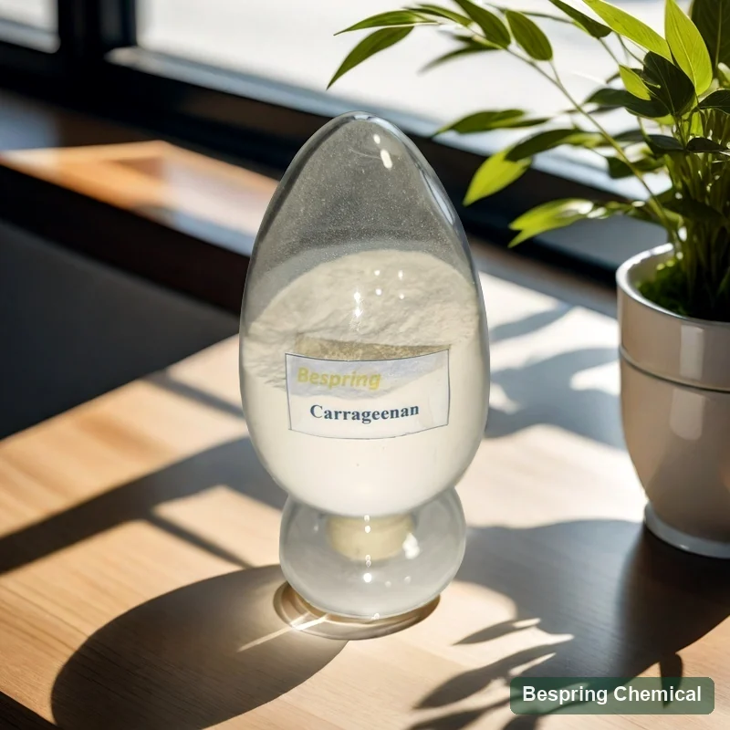
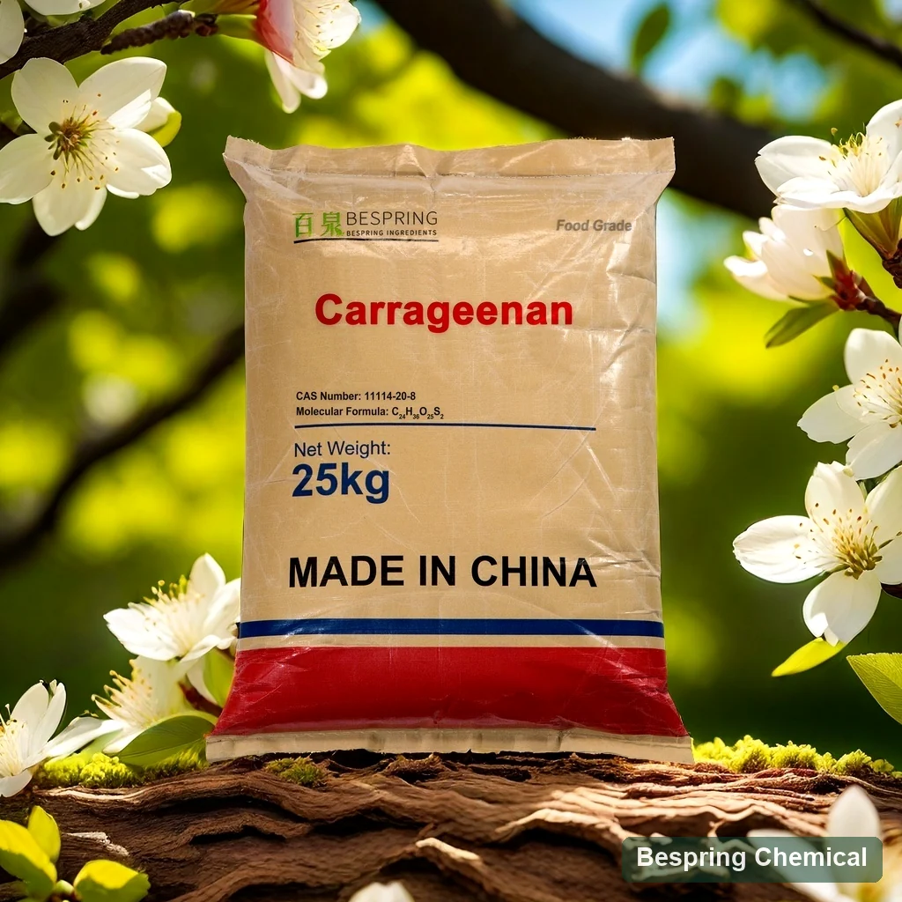
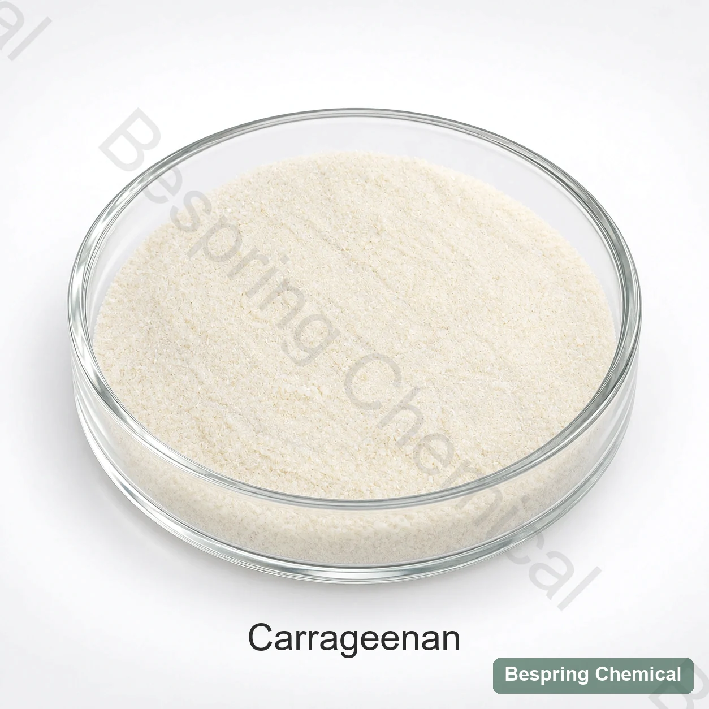
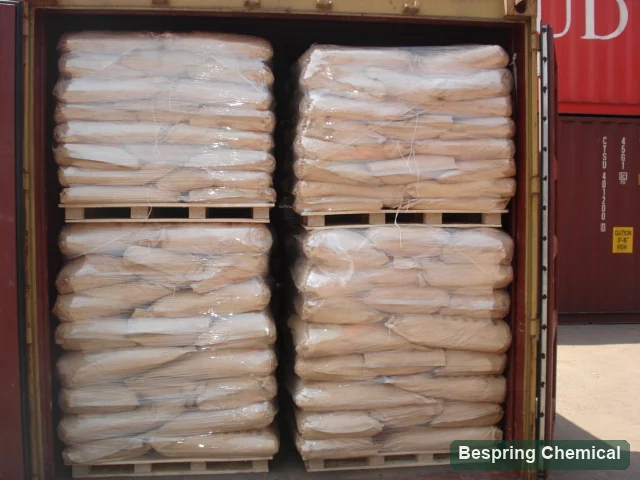

事務所、短いゲルの傾向
カリウムは、一般的なゲルの開発に特に効果的です。 スクリーンの堅さ、脆性、相乗症、溶解/セットの温度、タンパク質または他のゴムとの相乗。
レッドシーイード・ハイドロコロイド・INS 407/E407

製品イメージ・注文時にグレード・パッケージの確認
*500のkg MOQ、25のkgのパッキングおよび120の網は既存の商業参照です。厳密な等級、ふるい方法、源および現在の提供を確かめて下さい;INS 407aは別の指定を要求します。
第一のアイデンティティINS 407対INS 407a
レオロジー選択κ / ι / λ または定義されたブレンド
必要な方法ゲルと粘度条件
供給の参照*25キロ; 120メッシュ
パフォーマンス前のアイデンティティ
カラギーナンは、指定された赤の海藻から硫酸ガリアコタン塩酸の家族です。 2007 JECFAカラギーナン仕様 INS 407とCAS番号9000-07-1を示し、増粘、ゲル化、安定化および乳化の機能を挙げています。ポリマー組成、対イオンおよび標準化剤の有無はグレード選定に影響します。一つの固定した分子式、分子量または水和物で、すべての市販カラギナンを表すことはできません。
プロセスされたEucheumaの海藻(PES)は、半精製されたカラギーナンと呼ばれる、別のINS 407aの同一性です。それに別の処理の定義およびより保持されたセルロース物質があります。それはより低いゲル強さの価値によってだけ識別されません。各提供のための付加的なアイデンティティそして完全な原料の宣言を確かめて下さい;食糧、供給および技術的な等級は別の資格を必要とします。
ポリマー応答を選択します。
カリウムは、一般的なゲルの開発に特に効果的です。 スクリーンの堅さ、脆性、相乗症、溶解/セットの温度、タンパク質または他のゴムとの相乗。
Calciumは、適切なiotaシステムで弾性構造をサポートすることができます。 実際のレシピでせん断した後、相乗効果、凍結解凍、イオンレベル、回復を評価します。 これらの特性は、すべてのグレードのために固定されていません。
主に非ゲル化動作は、肥厚化ターゲットに適しています。 風邪/ホットプロセス、せん断曲線、タンパク質相互作用、最終口腔線を定義します。
水分補給とゲルの歴史制御性能
適したキャリアが付いている乾燥した傷か検証された事前wettingを使用して下さい;せん断および粉の付加率を制御して下さい。
精製されたカラギーナンは、通常、加熱で評価されます。JECFAのアイデンティティリファレンスは、80°C程度を使用しています。正確な水分補給は、タイプ、塩、処方によって異なります。
カルシウム、カルシウム、ナトリウム、乳タンパク質、その他、ガムレベルを変更する前に満たされた成分を測定します。
ゲルセット、ポンプおよび詰物は温度の履歴、移行および最終的な貯蔵の間にせん断します決まります。
アプリケーション固有の試験
ココア/粒子の懸濁液、カゼインの相互作用、粘度、熱安定性、沈殿物および過ゲル化を測定して下さい。
タンパク質源、カルシウム強化、オイルエマルジョン、均質化、熱プロセスは、応答を変更することができます。
塩分分散、調理収量、パージ、スライステクスチャ、合成、塩/リン酸相互作用および感覚的な品質をテストして下さい。
しっかりした対弾性の質感、不透明、風味のリリース、カット動作、溶融/セット温度、凍結 - thaw ニーズを選択します。
規制境界: INS IDは、すべてのカテゴリまたは投与量を承認しません。 宛先ルール、終了食品カテゴリを確認し、レベルとラベル宣言を使用します。
商業参照および等級の確認
以下の既存の商業分野は、お問い合わせスクリーニングとINS 407の比較をサポートしています。 彼らは、COAまたは適合の証明をバッチではありません。 洗練されたカラギーナンと処理されたユーチュマの海藻のために別途の仕様が必要です。 歴史的なゲル強度のエントリは、同等のグレードを確立しません。
小さな画面では、テーブルをスワイプして値と確認の要件を読みます。
スワイプするか、キーボードを使ってすべての列をご覧ください
| フィールド | 商用参照* | 承認の前に確認して下さい |
|---|---|---|
| 粘度 | ≥5 mPa·s | 1.5%、75°Cの方法を用いた場合にのみ、JECFAの下限と一致します。 |
| 乾燥の損失 | ≤12% | 一定重量105°CのJECFAに一致させます |
| pH | 8–11 | JECFA 1%サスペンション |
| 硫酸塩/総灰 | 各15～40% | 同じJECFA乾燥物基準の範囲が示されています。硫酸塩はSO₄²⁻として測定します。米国の硫酸塩要件は異なるため、以下をご覧ください。 |
| 酸溶性アッシュ | ≤1% | マッチINS 407;INS 407aのアイデンティティを確立しません |
| Pb / As / Cd / Hg | ≤5 / 3 / 2 / 1 mg/kg | JECFAカラギーナンが数値を制限するマッチ |
| エアロビックプレートカウント | ≤5,000 CFU/g | JECFAのマッチング、必要な方法 |
| コリフォーム | 5 g で従順 | 1gでJECFA E.コリネガを交換しない |
| サルモネラ | 10 g の従属 | 選択した標準のサンプリングプランと比較 |
| ゲルの強さ | 精製品≥1200；半精製品≥450 g/cm² | 濃度、K/Caの塩、温度、残り時間および器械の幾何学なしで比較可能ではない |
| JECFA分野を欠く | 供給しない | 酸溶性物質、残留溶剤および同一証明/型試験が必要 |
精製カラギナンとPESの仕様を別々に求め、海藻・工程の同定、主要なκ/ι/λの挙動、標準化剤、分析法および用途上のレオロジーを含めてください。ゲル値比較前に、濃度、塩組成、加熱・冷却、静置時間、温度および機器形状をそろえます。従来のg/cm²の力/面積規約は、貫入力測定と自動的に同じではありません。
重要な標準的な相違: 引用されたJECFA硫酸塩の範囲は乾燥した基礎の15–40%です、一方 21 CFR 172.620 定義されたカラギーナンの乾燥重量に基づいて20〜40%を指定します。既存の15〜40%の商用参照が保持されます。米国適合を想定するのではなく、バッチ結果と宛先固有の仕様を要求します。硫酸含有量と総灰は別々の測定です。
追加証拠: 引用されたJECFA INS 407の指定は酸不溶性物質≤2%および残りのエタノール、イソプロパノールおよびメタノール≤0.1、singlyまたは結合を含んでいます;これらの結果は商業テーブルで供給されません。5 gの同輩の不在は1 gのE.のcoriの否定的を取り替えないし、10 gのsampling-planの検討のサルモネラの不在。提供された等級TDS/specification、SDS、SDS、代表者およびcoAの沈殿物および条件の点検を確かめて下さい。
CAS 9000-07-1、INS 407の同一性、ポリマー タイプ、容解性、純度および微生物学。
Monographレビュー4INS 407aは原料、処理および保持されたセルロシックな問題によって別に定義されます。
PESレコードのレビューグレード・ツー・アプリケーション承認
INS 407または407a、海藻類/ソース、精製プロセスおよび予備的なポリマー行動。
ゲルの集中、イオン解決、熱すること/冷却する、残り時間、温度および器械の幾何学。
分散、水和、ポンプ/充填せん断、セットプロファイル、ストレージ、フリーズ–関連する場所。
COA、微生物学、要素、溶媒、メッシュ、湿気、包装、貯蔵寿命および変更制御。
出現およびパッキングの参照



バイヤーの質問
必須のテクスチャとプロセスから始まります: しっかりしたゲルの傾向のためのカッパ, プレドミナント非ゲル化厚化のための弾性ゲルの傾向とラムダのためのオオクタ. 実際のポリマーブレンドを確認, 塩, 標準化者とフードシステム試験 だけでなく、タイプ名だけで選択.
いいえ。JECFAは、INS 407としてカラギーナンを定義し、異なる処理と不溶性マッター特性を持つINS 407aとしてユーチュマ海藻を加工します。必要なアイデンティティとグレードを指定します。低ゲル強度の結果は、PESを識別しません。
適合濃度、塩システム、加熱/冷却、休息時間、測定温度、および測定器ジオメトリのみ。レポートユニットと力/エリアの慣習を明確化します。このページの歴史的洗練された半精製された数字は、同等等級の証拠ではありません。
いいえ。商用スクリーニングの参照であり、いくつかの標準フィールドを欠いています。特に、その硫酸範囲は15%から始まりますが、引用された米国カラギーナンの規定は乾式体重ベースで20%から始まります。完全な宛先の仕様、方法、実際のバッチCOAを確認してください。
固定された結果は適用しません。蛋白質、イオン、固体、pH、均質化および熱歴史は応答に影響を与えます。実際の飲料の懸濁液、粘度、分離および不必要なゲル化を点検するのに制御および等級の試験を使用して下さい。
INS ID、kappa/iota/lambdaターゲット、成分宣言、アプリケーション、イオン/タンパク質/固体、プロセス温度とせん断、レオロジーメソッド、品質制限、数量、包装、宛先、配送条件を提供します。 TDS、SDS、COAを要求し、スコープが確認した宣言または証明書が必要です。
2026-10-04 · テクニカルリファレンス: FAO/WHO JECFA, FAOカラギーナンガイダンスとUS eCFR.
関連するテクスチャシステム
グルコマンナンの水分補給、アルカリのゲル化および混合の相乗を見直して下さい。
カルギーナン型ゲルの動作をせずに、擬似プラスチック厚化とサスペンションを比較します。
冷水粘度、水分補給率、ブレンド動作を比較します。
HM/LMゲルのメカニズム、pH、溶性固体およびカルシウム窓を比較して下さい。
関連の適用指導: 加工チーズ 塩と酪農の安定剤を乳化.
レオロジー主導の調達
実際の処方と試験方法を共有することで、一般的なゲル強度の数値でオファーが選択されません。
あなたの等級および宛先市場を私達に知らせて下さい従って私達はあなたの順序のためにどの文書が利用できるか確認してもいいです。
外部参照は、バッチ証明書または Bespring 製品仕様ではありません。